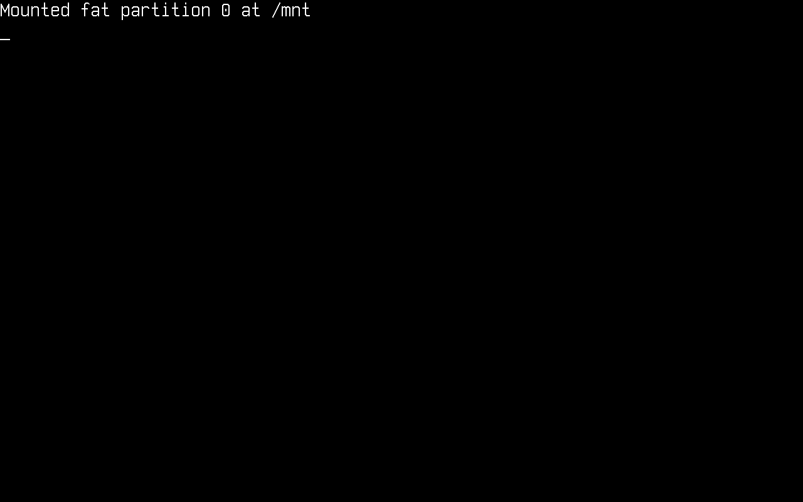
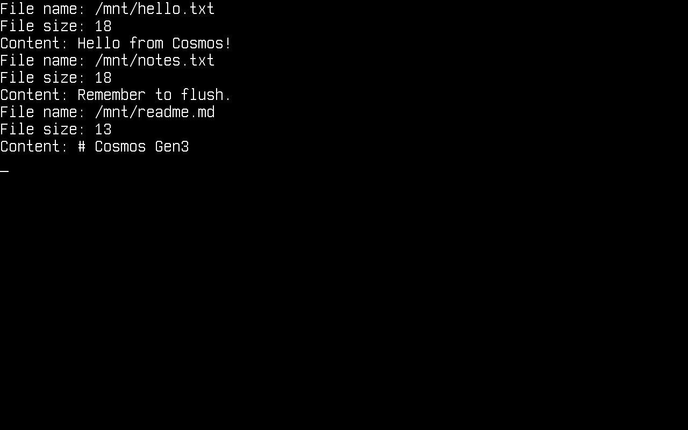

File system
In this article, we will discuss disks and files on Cosmos Gen3: giving your kernel a disk, mounting a filesystem on it, reading CD-ROMs and ISO images, partitioning and formatting a disk, and working with files once a volume is mounted.
Reading and writing files needs no Cosmos-specific API. Gen3 runs the standard .NET System.IO unmodified (File, Directory, FileStream, StreamReader, FileInfo and the rest), and the kernel answers the system calls it would make on Linux. The Cosmos part is the step before: your kernel registers a filesystem driver and mounts a volume at a Unix-style path such as /mnt, and from then on every path under /mnt is served by that driver.
The main differences if you come from Gen2:
| Gen2 | Gen3 | |
|---|---|---|
| Paths | DOS drive letters (0:\file.txt) |
Unix paths (/mnt/file.txt) |
| Setup | CosmosVFS + VFSManager.RegisterVFS |
VfsManager.RegisterFileSystem + VfsManager.TryMount |
| API surface | Plugged subset of System.IO |
Full System.IO (streams, enumeration patterns, FileInfo, ...) |
File.Move |
Not plugged (copy + delete) | Works, and can overwrite an existing destination |
| Filesystems | FAT32 (FAT12/16 partial), ISO 9660 | FAT12/16/32, ext2, ISO 9660 with Rock Ridge (read-only) |
| Files on the ISO | An isoFiles folder in the project |
The same isoFiles folder, plus CosmosIsoFile items (Ship files on the boot ISO) |
Try this in a virtual machine first. Partitioning and formatting write straight to the disk, with nothing to confirm and nothing to undo, so on real hardware a wrong sector offset destroys whatever the disk held. cosmos run gives QEMU a disk image you can throw away, and a VMware or VirtualBox virtual disk is just as disposable.
WARNING!: Please do not try this on actual hardware! It may cause IRREPARABLE DAMAGE to your data. Use a virtual machine (QEMU via cosmos run, VMware, VirtualBox, …).
Partition and format your kernel's disks from Cosmos, with the calls this page shows, rather than with Parted or fdisk. Cosmos is tested on disks it laid out itself, and a host tool can lay a disk out in ways those tests never cover.
If you find bugs or something abnormal, please submit an issue on our repository.
Enable storage in your kernel
Storage support is behind a feature switch. Make sure your kernel's .csproj does not turn it off (it defaults to true):
<PropertyGroup>
<CosmosEnableStorage>true</CosmosEnableStorage>
</PropertyGroup>
With the switch on, the kernel brings its storage drivers up during boot and hands every disk they find to StorageManager. The manager lists the disks in StorageManager.Devices, reads each one's MBR or GPT partition table, and lists the partitions it finds in StorageManager.Partitions, all before your kernel's BeforeRun() runs. Each disk gets a name, which is what the boot log and IBlockDevice.Name show:
| Disk | Names | Attach one in QEMU with |
|---|---|---|
| A SATA disk, behind an AHCI controller | sata0, sata1, ... |
cosmos run --disk disk.img |
| An NVMe namespace | nvme0n1, ... |
cosmos run --disk disk.img,nvme |
| A virtio-blk disk | vblk0, ... |
cosmos run --disk disk.img,virtio-blk (or virtio-blk-mmio on arm64) |
| A USB stick | usb0, usb1, ... |
cosmos run --disk disk.img,usb |
| A CD-ROM drive, behind an AHCI controller | cdrom0, ... |
Nothing: on x64, cosmos run boots from one |
USB sticks also need CosmosEnableUsb, which defaults to true whenever CosmosEnableStorage is on. Setting it to false drops the USB host controller drivers, and the sticks with them, while the other disks stay.
To give your kernel disks in QEMU, create an image per drive and pass each one to cosmos run with its kind from the table above (a bare image is a SATA disk):
$ qemu-img create disk.img 64M
$ qemu-img create stick.img 64M
$ cosmos run --disk disk.img --disk stick.img,usb
An image fresh from qemu-img create is blank: it carries no partition table and no filesystem, so the kernel lists the disk but finds no partition on it. Lay a table down and format a partition from your kernel, as Partition a disk and Format a partition show, before you mount it.
Which disk comes first
StorageManager.PrimaryDevice is the first entry of Devices, and the manager keeps that list in a fixed order rather than in the order the disks came up, so the primary device does not depend on which driver finished first. Disks the drivers found come first, ordered by the bus and address of the device the driver kit found them on, which puts a SATA or NVMe disk (pci:) before a USB stick (usb:) and a USB stick before a virtio-blk disk (virtio:). Disks your kernel registered itself with StorageManager.RegisterDevice follow, in the order it registered them. Read-only media such as a CD come last, so the primary device is a disk you can format whenever the machine has one.
The order has one consequence to plan for: a disk that arrives later takes its place in that order, not the end of the list. A USB stick plugged in while a virtio-blk disk is attached goes ahead of it, and every partition of the virtio-blk disk moves down in StorageManager.Partitions. That is why this page mounts a Partition rather than an index into that list.
Disks that come and go
USB sticks, and virtio-blk disks behind a PCI Express hot-plug slot, can be plugged in and pulled out while the kernel runs. A disk plugged in is registered and scanned like one found at boot, under the lowest usbN or vblkN name that is free.
A disk pulled out leaves Devices and Partitions, and the mounts on it go with it. A mount made with the Partition overload of TryMount (shown below) is detached without a flush, since the disk can take no more writes, so call VfsManager.TryUnmount before you pull out a disk you wrote to. A mount made from a source string names no disk, so it stays in the mount table. Either way, a file still open on the disk fails its next read or write with the driver's IOException ("USB device detached" from the USB mass storage driver, "virtio-blk device detached" from the virtio-blk one, "NVMe device detached" from the NVMe one), or with an InvalidOperationException once the kit has released the driver's memory.
When a disk comes or goes, a driver kit thread replaces both lists whole, so a list you hold never changes under you, but reading the property again may give a newer one. Read Devices or Partitions once and index that copy.
To try this in QEMU, start with at least one usb disk: the first gives the machine an xHCI controller, usbxhci0, and the controller's name is the bus you plug another stick into from the QEMU monitor (Ctrl+Alt+2 in the QEMU window). --usb-controller ehci or ehci-ohci puts an EHCI controller there instead, usbehci0, and ohci an OHCI one, usbohci0; both pin every USB device to one of their root ports:
(qemu) drive_add 0 if=none,id=stick,file=stick.img,format=raw
(qemu) device_add usb-storage,drive=stick,id=stick,bus=usbxhci0.0
(qemu) device_del stick
Register a filesystem driver and mount it
A partition is a range of sectors until a filesystem driver reads it. Cosmos ships three drivers, one namespace each: FAT (FAT12, FAT16 and FAT32), ext2, and ISO 9660. Your kernel registers the ones it wants under names of its choice, then mounts a partition with one of them at a mount point.
These are the usings the snippets below rely on:
using System.IO;
using Cosmos.Kernel.HAL.Devices.Storage;
using Cosmos.Kernel.System.FileSystem;
using Cosmos.Kernel.System.FileSystem.Fat;
using Cosmos.Kernel.System.Storage;
Cosmos.Kernel.System.FileSystem is the VFS itself: VfsManager, the mount table's entries (VfsMount), the flag and metadata types a mount or a stat call names (MountFlags, VfsMode, VfsStat, VfsStatFs), and the interfaces a filesystem driver implements. That is why MountFlags.None needs no using of its own. The drivers sit one level down: FatFileSystemType and FatFormatOptions in Cosmos.Kernel.System.FileSystem.Fat, Ext2FileSystemType in Cosmos.Kernel.System.FileSystem.Ext2, and Iso9660FileSystemType in Cosmos.Kernel.System.FileSystem.Iso9660. StorageManager and the partition types are in Cosmos.Kernel.System.Storage, and Cosmos.Kernel.HAL.Devices.Storage is there only for IBlockDevice, the type of a disk, which the RAM disk further down implements and the partitioning snippets hold.
Register the FAT driver, then mount the first partition at /mnt. This goes in your kernel's BeforeRun():
FatFileSystemType fat = new();
if (!VfsManager.RegisterFileSystem("fat", fat))
{
Console.WriteLine("The name \"fat\" is already registered.");
return;
}
if (StorageManager.Partitions.Count == 0)
{
Console.WriteLine("No partitions found.");
return;
}
if (VfsManager.TryMount("fat", StorageManager.Partitions[0], MountFlags.None, "/mnt", out VfsMount? mount))
{
Console.WriteLine("Mounted " + mount.Name + " partition " + mount.Source + " at " + mount.MountPoint);
}
else
{
Console.WriteLine("No FAT volume on the first partition.");
}
Each of these calls reports a refusal through its return value rather than an exception: RegisterFileSystem refuses a name already in use, and TryMount refuses a partition the driver finds no volume on. A disk that fails the read itself still throws its driver's exception. Partitions is empty when storage is compiled out, or when no disk carries a partition table or a FAT volume and no CD is in a drive, which is why the snippet checks Count before indexing it. On x64, cosmos run boots from a CD the kernel lists too, so when no attached disk has a partition, the first entry is that CD and the FAT driver finds no volume on it.
StorageManager.GetPartitions(device) gives the partitions of one disk, numbered the way a user numbers them, where Partitions is the flat list across every disk.
TryMount also takes the source as a string, as in VfsManager.TryMount("fat", "0", ...), which each driver reads its own way: the FAT driver reads it as an index into StorageManager.Partitions. Prefer the Partition overload. An index names whatever partition sits at that position, and creating or deleting a partition, or a disk arriving or leaving, moves them.

From this point on, everything under /mnt is served by the FAT driver.
The root, /, is not a volume. It exists with nothing mounted, and enumerating it lists the mount points, but creating a file directly in it fails with IOException (read-only file system), since no driver sits there to store the file. Create files under a mount point such as /mnt.
Try it on a RAM disk
For quick experiments you do not need a disk image at all. A block device is anything that implements IBlockDevice, and one backed by an array fits in a few lines:
internal sealed class MemoryBlockDevice : IBlockDevice
{
private readonly byte[] _storage;
public MemoryBlockDevice(string name, ulong blockSize, ulong blockCount)
{
Name = name;
BlockSize = blockSize;
BlockCount = blockCount;
_storage = new byte[blockSize * blockCount];
}
public string Name { get; }
public ulong BlockSize { get; }
public ulong BlockCount { get; }
public void ReadBlock(ulong blockNo, ulong blockCount, Span<byte> data)
=> _storage.AsSpan((int)(blockNo * BlockSize), (int)(blockCount * BlockSize)).CopyTo(data);
public void WriteBlock(ulong blockNo, ulong blockCount, ReadOnlySpan<byte> data)
=> data.Slice(0, (int)(blockCount * BlockSize)).CopyTo(_storage.AsSpan((int)(blockNo * BlockSize)));
public void Flush() { }
}
The FAT driver takes such a device in its constructor. Register it as usual and pass an empty source, since a driver that already holds its device has nothing to look up, then format the device and mount it:
MemoryBlockDevice ramDisk = new("RAMDISK", 512, 65536); // 32 MiB
FatFileSystemType fat = new(ramDisk);
if (!VfsManager.RegisterFileSystem("ramfat", fat)
|| !VfsManager.TryFormat("ramfat", "", new FatFormatOptions { Type = FatType.Fat16 })
|| !VfsManager.TryMount("ramfat", "", MountFlags.None, "/mnt", out _))
{
Console.WriteLine("RAM disk setup failed.");
return;
}
Read a CD-ROM or an ISO image
CD drives have mostly disappeared from our computers, but their filesystem lives on: operating systems are still downloaded as .iso images, and cosmos build packs your own kernel into one. Iso9660FileSystemType, in Cosmos.Kernel.System.FileSystem.Iso9660, lets your kernel read such a volume, whether it sits on a CD, on a USB stick an image was written to, or in memory.
On its own, the standard only knows upper-case names that end in a version number, such as HELLO.TXT;1. That is why images made on Unix systems usually carry the Rock Ridge extension, and the one cosmos build makes does: Rock Ridge gives each file its real name, hello.txt, along with its Unix permissions, its time stamps and its symbolic links, and the driver reads all of them when the volume has it. On a volume without Rock Ridge, a file shows up under its plain identifier without the version (README, FILE.TXT), and you can type that name in any case, because the standard allows only upper case there. The driver does not read Joliet, the long names Windows tools add, so a volume that has only Joliet shows its plain identifiers too.
The driver mounts like the FAT one, from a partition or from a device handed to its constructor, and it accepts any sector size, so the same image mounts from a CD drive (2048-byte sectors), from a USB stick (512-byte sectors) or from a MemoryBlockDevice holding its bytes. Here cdrom is any IBlockDevice that holds a volume, and the next paragraphs show how to find the CD drive among the disks:
using Cosmos.Kernel.System.FileSystem.Iso9660;
Iso9660FileSystemType iso = new(cdrom);
if (!VfsManager.RegisterFileSystem("iso", iso)
|| !VfsManager.TryMount("iso", "", MountFlags.None, "/cd", out VfsMount? cd))
{
Console.WriteLine("No ISO 9660 volume there.");
return;
}
Console.WriteLine(cd.IsReadOnly); // True
foreach (string path in Directory.GetFiles("/cd/docs"))
{
Console.WriteLine(path + ": " + new FileInfo(path).Length + " bytes");
}
string text = File.ReadAllText("/cd/hello.txt");
Most often the volume is in a CD drive. When that drive sits behind a SATA controller in AHCI mode, the kernel lists it in StorageManager.Devices as cdrom0, provided a disc was in it at boot: the driver brings a drive up only once it finds a disc in it, and it does not watch for one inserted later, so a drive that was empty at boot never appears. What tells it apart from a disk is a second interface on the same object, IRemovableMedia, with IsReadOnly, IsRemovable and HasMedia. The driver kit calls such an extra interface a facet. This one is part of the kit's experimental surface, marked [Experimental("COSMOS0003")], so a kernel that tests for it acknowledges the id in its .csproj with <NoWarn>$(NoWarn);COSMOS0003</NoWarn>. Finding the drive is then one loop over the list:
using Cosmos.Kernel.HAL.Devices.Storage; // IBlockDevice, IRemovableMedia
using Cosmos.Kernel.System.Storage; // StorageManager
IBlockDevice? cdrom = null;
foreach (IBlockDevice device in StorageManager.Devices)
{
if (device is IRemovableMedia { IsReadOnly: true })
{
cdrom = device;
break;
}
}
The storage manager does not look for a partition table on a CD. A read-only disc holds no partition table a kernel could change, and the protective MBR at the start of a bootable ISO counts in 512-byte units that a 2048-byte-sector drive would misread, so the manager lists the whole disc as one partition. It also keeps the drive after every writable disk, as Which disk comes first explains, so on x64, where cosmos run boots from such a drive, the boot CD is the last entry of Partitions, and the first one when no disk has a partition of its own.
The volume is read-only, and the whole VFS knows it. VfsMount.IsReadOnly is true and VfsMount.Flags carries MountFlags.ReadOnly whatever flags you mounted with, FileInfo.IsReadOnly is true for every file, and every write fails the way it does on Linux, with a plain IOException ("Read-only file system") rather than an exception that would suggest the file is missing.
Any driver refuses writes the same way when you mount it with MountFlags.ReadOnly. The flag belongs to the mount rather than the volume: the VFS checks it at the mount point, not in the driver.
A few things on a disc stay out of reach. A file split over several extents, which is how ISO 9660 stores one larger than 4 GiB, is not listed. Only the first session of a multi-session disc is read, and UDF is not read at all. The El Torito boot catalog, which makes a CD bootable, is not interpreted either: when the disc lists it, it shows up as one more file.
The drive itself has to be one the kit publishes as a block device, which today means a drive behind a SATA controller in AHCI mode (The storage drivers). That is where QEMU's q35 machine puts its CD drive, so a kernel that cosmos run boots on x64 can read its own boot CD, and where VMware puts it when the virtual drive is on the SATA controller rather than the IDE one. A drive behind a USB, virtio-scsi or IDE controller is not a block device yet, and cosmos run attaches the boot ISO through virtio-scsi on arm64. A kernel there reads an image instead: from RAM, from a disk partition the image was written into, or from a USB stick the image was written to, handed whole to the constructor as new Iso9660FileSystemType(stick).
Ship files on the boot ISO
Since a kernel can read its boot CD, the ISO is also a handy place for the files it needs at run time: a configuration file, a font, a picture. cosmos build puts the kernel and Limine under /boot and /EFI, and, as in Gen2, whatever sits in an isoFiles folder next to your kernel's .csproj goes to the root of the ISO with its folders, so isoFiles/data/config.txt becomes /data/config.txt on the disc.
A file that lives elsewhere, or that should land under another name, is a CosmosIsoFile item in the .csproj. Its IsoPath metadata is its path on the ISO. An IsoPath ending in / names a folder and keeps the file's own name, and a file without one goes to the root:
<ItemGroup>
<CosmosIsoFile Include="../assets/logo.bmp" IsoPath="images/logo.bmp" />
<CosmosIsoFile Include="../assets/readme.txt" IsoPath="docs/" />
</ItemGroup>
The CosmosIsoFilesDirectory property points the build at another folder. Whatever that folder holds is left out of the compilation, so a .cs file in it is shipped as a file rather than built into the kernel.
The build stops with an error rather than write a broken ISO. It refuses a file that would land under /boot or /EFI, since those hold the kernel and the bootloader the SDK writes. It refuses an IsoPath with a . or .. segment, since .. could climb out of the ISO's root. And it refuses two files with the same path, compared without case, since on a Windows host the second copy would overwrite the first.
The ISO's build cache covers the files and their paths, so adding, changing, renaming or removing one rebuilds the ISO without compiling the kernel again.
On the disc the files keep their names, case and spaces included, because Rock Ridge carries them. The kernel reads them back once it has mounted the boot CD, found as in the previous section:
using Cosmos.Kernel.System.FileSystem; // VfsManager, MountFlags
using Cosmos.Kernel.System.FileSystem.Iso9660; // Iso9660FileSystemType
VfsManager.RegisterFileSystem("bootcd", new Iso9660FileSystemType(cdrom));
VfsManager.TryMount("bootcd", "", MountFlags.None, "/cdrom", out _);
string config = File.ReadAllText("/cdrom/data/config.txt");
That read needs the boot drive to be a block device, which it is behind an AHCI controller. Where it is not, as on an arm64 machine booting from virtio-scsi, the files are on the disc but the kernel cannot reach them yet.
Partition a disk
A disk fresh from qemu-img create holds no partition table, and formatting needs a partition to format. StorageManager.Partitions lists the ones already on the disks the kernel found at boot; when there are none, or you want a different layout, Gpt, Mbr and PartitionManager write the partition table itself. They all take an IBlockDevice, which StorageManager.PrimaryDevice hands you.
Start by asking what scheme the disk already carries:
IBlockDevice? disk = StorageManager.PrimaryDevice;
if (disk is null)
{
Console.WriteLine("No disk");
return;
}
if (Gpt.IsGpt(disk))
{
Console.WriteLine("GPT, " + Gpt.Parse(disk).Count + " partition(s)");
}
else if (Mbr.IsMbr(disk))
{
Console.WriteLine("MBR, " + Mbr.Parse(disk).Count + " partition(s)");
}
else
{
Console.WriteLine("No partition table");
}
Gpt.Create and Mbr.Create lay down an empty table of that scheme, and the partitions the disk held go with the old table. PartitionManager.Create then adds a partition, on whichever scheme the disk carries, so you do not have to branch:
Gpt.Create(disk);
/* 64 MiB at LBA 2048, on a 512-byte-sector disk. The MBR system id and the
GPT type GUID are both given; only the one matching the disk's scheme is
used. */
if (!PartitionManager.Create(disk, startSector: 2048, sectorCount: 131072,
mbrSystemId: 0x0C, gptType: Gpt.BasicDataPartitionType))
{
Console.WriteLine("Create failed");
return;
}
StorageManager.RescanPartitions(disk);
RescanPartitions is what makes the new partition show up in StorageManager.Partitions. Until you call it, the list still describes the old table.
Existing partitions are addressed by a PartitionLocation, the start sector and the length rather than an index, so a partition keeps its identity when the table is renumbered:
PartitionManager.PartitionLocation where = new(startSector: 2048, sectorCount: 131072);
PartitionManager.Resize(disk, where, newSectorCount: 262144);
PartitionManager.MoveWithData(disk, where, newStartSector: 4096);
PartitionManager.Delete(disk, where);
MoveWithData copies the contents to the new location before it rewrites the entry. Resize and Delete only touch the table, so shrinking a partition below the size of its filesystem loses data.
Every partition index is positional. Deleting a partition renumbers the entries after it, and StorageManager.Partitions renumbers with them, so read the list again after any change rather than holding an index across one.
MBR has four primary slots, and a chain of logical partitions inside an extended one goes past them. Mbr.TryGetExtendedPartition finds the extended partition, and PartitionManager.TryCreateLogical adds a logical one inside it:
if (Mbr.TryGetExtendedPartition(disk, out ulong extendedStart, out ulong extendedCount)
&& PartitionManager.TryCreateLogical(disk, systemId: 0x0C, sectorCount: 65536, out ulong logicalStart))
{
Console.WriteLine("logical partition at LBA " + logicalStart);
}
Gpt, Mbr and Ebr are the lower layer, one type per scheme, for the entries PartitionManager does not expose.
Format a partition
VfsManager.TryFormat formats (mkfs) a partition through the VFS. It takes the driver name, the partition and the driver's option type, and every FAT option you leave unset (the cluster size, the number of FAT copies, the reserved sectors) is picked by the formatter from the FAT type and the partition's size:
FatFormatOptions options = new()
{
Type = FatType.Fat32,
VolumeLabel = "COSMOS ",
};
if (StorageManager.Partitions.Count == 0
|| !VfsManager.TryFormat("fat", StorageManager.Partitions[0], options))
{
Console.WriteLine("Format failed");
}
TryFormat refuses a partition that is mounted, so unmount it first with VfsManager.TryUnmount("/mnt").
List mounted volumes
VfsManager.Mounts is the mount table. Each entry gives the name the driver was registered under, the source it was mounted from and the mount point:
foreach (VfsMount m in VfsManager.Mounts)
{
Console.WriteLine(m.MountPoint + " -> " + m.Name + " (source " + m.Source + ")");
}

m.Partition is the partition itself, for a mount made with the Partition overload. Prefer it to parsing m.Source back into an index: it keeps naming the same range of the same disk after a rescan renumbers StorageManager.Partitions.
Check free space
VfsManager.TryStatFs reports a mount's block accounting. Free space is the available block count times the block size:
if (VfsManager.TryStatFs("/mnt", out VfsStatFs stats))
{
ulong freeBytes = stats.AvailableBlocks * stats.BlockSize;
ulong totalBytes = stats.Blocks * stats.BlockSize;
Console.WriteLine(freeBytes + " of " + totalBytes + " bytes free");
}
An ISO 9660 mount reports its size with no free blocks at all, since nothing can be written to it. DriveInfo is not wired up yet, so this is the way to read free space.
List a directory
From here on, everything is the standard System.IO, and the paths are the ones under your mount point. Directory.GetFiles lists the files of a directory:
foreach (string file in Directory.GetFiles("/mnt"))
{
Console.WriteLine(file);
}

Search patterns work too, since this is the stock .NET enumeration code:
string[] logs = Directory.GetFiles("/mnt", "*.txt");
Directory.GetDirectories lists the subdirectories the same way:
foreach (string directory in Directory.GetDirectories("/mnt"))
{
Console.WriteLine(directory);
}

Read a file
File.ReadAllText reads a whole file as a string. A failing filesystem call throws the standard System.IO exception, as in Gen2, and you catch it as on any other .NET platform, so this loop prints every file under /mnt and reports a failed read instead of stopping the kernel:
try
{
foreach (string file in Directory.GetFiles("/mnt"))
{
string content = File.ReadAllText(file);
Console.WriteLine("File name: " + file);
Console.WriteLine("File size: " + content.Length);
Console.WriteLine("Content: " + content);
}
}
catch (Exception e)
{
Console.WriteLine(e.ToString());
}

File.ReadAllBytes reads a file as bytes. The snippets from here on leave the try/catch out to stay short:
Console.WriteLine(File.ReadAllText("/mnt/testing.txt"));
byte[] data = File.ReadAllBytes("/mnt/testing.txt");
Console.WriteLine("Read " + data.Length + " bytes");
Create and write files
File.Create creates an empty file, or empties an existing one, and hands back the stream it opened, which the using closes. Directory.CreateDirectory creates a directory along with every missing parent, in one call:
using (FileStream stream = File.Create("/mnt/testing.txt"))
{
}
Directory.CreateDirectory("/mnt/documents/reports");
File.WriteAllText replaces a file's content, creating the file if it does not exist yet, and File.WriteAllBytes and File.WriteAllLines do the same with bytes and lines. File.AppendAllText adds to the end of the file instead, and creates it too when it is missing:
File.WriteAllText("/mnt/testing.txt", "Learning how to use the Gen3 VFS!");
Copy, move and delete
File.Copy, File.Move, File.Delete and Directory.Delete work as they do on any other .NET platform:
File.Copy("/mnt/testing.txt", "/mnt/copy.txt");
File.Move("/mnt/copy.txt", "/mnt/renamed.txt");
File.Delete("/mnt/renamed.txt");
Directory.Delete("/mnt/documents", recursive: true);
Unlike Gen2, a File.Move within one mount is a real rename rather than a copy followed by a delete. A move onto an existing file throws IOException unless you pass overwrite: true, and the overwrite loses nothing if it stops halfway: the destination is moved aside as a backup and only deleted once the rename has landed. A move between two mounts is a copy followed by a delete, as on Linux, since a rename cannot cross from one volume to another.
Deleting a file that is still open does not fail. The VFS holds the delete back until the last handle on the file closes, and only then removes the entry: the FAT driver frees a file's clusters the moment its entry goes, so a handle still reading them would read whatever is written there next. This is also what makes FileOptions.DeleteOnClose work.
Streams
The whole stream stack is available, with seeking, truncation (SetLength) and buffered text I/O:
using (FileStream stream = new("/mnt/log.bin", FileMode.Create, FileAccess.ReadWrite))
{
stream.Write(new byte[] { 1, 2, 3, 4 });
stream.Seek(0, SeekOrigin.Begin);
int first = stream.ReadByte(); // 1
}
using (StreamWriter writer = new("/mnt/notes.txt"))
{
writer.WriteLine("first line");
writer.WriteLine("second line");
}
using (StreamReader reader = new("/mnt/notes.txt"))
{
string? line;
while ((line = reader.ReadLine()) != null)
{
Console.WriteLine(line);
}
}

Current directory and relative paths
The kernel keeps a current directory, which starts at /, so relative paths and Path.GetFullPath behave as on any Unix system:
Directory.CreateDirectory("/mnt/work");
Directory.SetCurrentDirectory("/mnt/work");
File.WriteAllText("relative.txt", "resolved against the CWD");
Console.WriteLine(File.Exists("/mnt/work/relative.txt")); // True
Console.WriteLine(Path.GetFullPath("sub/../file.txt")); // /mnt/work/file.txt
Directory.SetCurrentDirectory("/");
Error handling
A failure throws the exception the System.IO documentation names for it, so you can catch exactly the case you expect:
| What went wrong | Exception |
|---|---|
| Opening a file that does not exist, in a directory that does | FileNotFoundException |
| Any path under a missing directory, or under a path nothing is mounted at | DirectoryNotFoundException |
Creating a file directly in the root, / |
IOException (read-only file system) |
Any write under a read-only mount: an ISO 9660 volume, or a mount made with MountFlags.ReadOnly |
IOException (read-only file system) |
Deleting a directory that is not empty without recursive: true |
IOException |
File.Copy or File.Move onto an existing file without overwrite: true |
IOException |
This holds with nothing mounted at all. Directory.Exists("/") is then true and enumerating / gives an empty list, and every other path fails with one of the exceptions above rather than faulting the kernel.
Current limitations
Symbolic links cannot be created: File.CreateSymbolicLink is refused as "Operation not permitted", which .NET throws as UnauthorizedAccessException. The ext2 and ISO 9660 drivers do follow the symbolic links their volumes already hold, but a link's target cannot be read back: FileSystemInfo.LinkTarget is null.
Time stamps cannot be set either: File.SetLastWriteTime and its siblings are accepted and change nothing. Reading them depends on the volume: the ext2 and ISO 9660 drivers report the ones their volumes hold, while the FAT driver neither stores nor reads them, so every file on a FAT volume reports the Unix epoch, 1970-01-01.
FAT and ISO 9660 are the drivers Cosmos tests inside a running kernel. The ext2 driver, Ext2FileSystemType, ships beside them but is only tested on the host so far. A CD drive is reachable only behind an AHCI controller, as described in Read a CD-ROM or an ISO image. The storage manager takes at most eight disks, and any after that are not listed.
How it works
Your code calls the stock .NET libraries, which end in the Unix platform layer, the Interop.Sys.* P/Invokes .NET makes on Linux. Cosmos plugs those calls in Cosmos.Kernel.Plugs, where a file descriptor table translates them for VfsManager. VfsManager owns the paths, the current directory, the open handles and the mount table with each mount's flags, which is where a write under a read-only mount is refused, and it passes everything else to the mounted filesystem driver. The driver reads and writes an IBlockDevice: a disk the driver kit published and StorageManager registered, or a device your kernel built, such as the RAM disk above. A filesystem driver of your own implements IVfsFileSystemType and is registered like the shipped ones. From your call down to the disk, the layers stack like this:
File / Directory / FileStream (stock .NET)
│
Interop.Sys.* PAL calls (stock .NET, plugged)
│
file descriptor table (Cosmos.Kernel.Plugs: fds, dir streams, errno)
│
VfsManager (mounts, paths, CWD, open handles)
│
IVfsFileSystemType / IVfsSuperblock (the FAT, ext2 and ISO 9660 drivers)
│
IBlockDevice (the kit's AHCI, NVMe, virtio-blk and USB mass storage drivers, MemoryBlockDevice)
Summary
| Task | Call |
|---|---|
| List the disks | StorageManager.Devices |
| List the partitions | StorageManager.Partitions, StorageManager.GetPartitions(device) |
| Register a filesystem driver | VfsManager.RegisterFileSystem(name, driver) |
| Mount a partition | VfsManager.TryMount(name, partition, flags, mountPoint, out mount) |
| Mount a device the driver holds | VfsManager.TryMount(name, "", flags, mountPoint, out mount) |
| Unmount | VfsManager.TryUnmount(mountPoint) |
| Write a partition table | Gpt.Create(disk), Mbr.Create(disk) |
| Add, resize, move or delete a partition | PartitionManager.Create, Resize, MoveWithData, Delete |
| Pick up a new partition table | StorageManager.RescanPartitions(disk) |
| Format a partition | VfsManager.TryFormat(name, partition, options) |
| List the mounts | VfsManager.Mounts |
| Read the free space | VfsManager.TryStatFs(mountPoint, out stats) |
| Work with files | File, Directory, FileStream, StreamReader, StreamWriter |